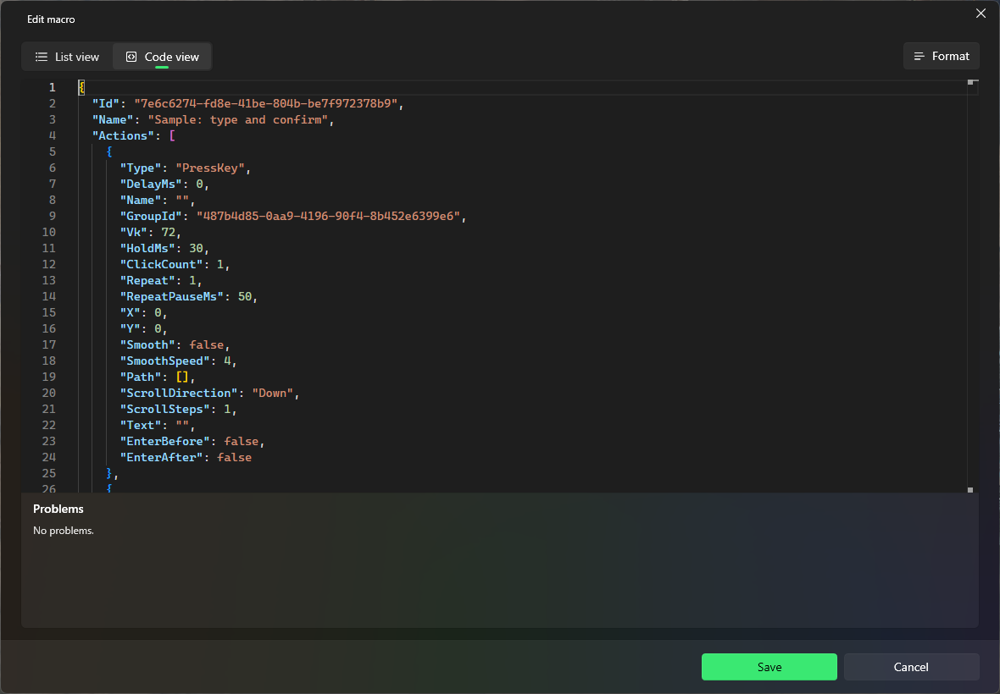

A macro plays back a list of actions. Create one with New macro or Record macro on the Macros page.
Record
Select Record macro. PuppyMacro hides and Ready to record appears. Choose whether to Record mouse movement.
Select Start recording: a 3, 2, 1 countdown appears in the middle of the screen while you switch to the window to record. Clicks during the countdown are not recorded; Cancel in the recording bar cancels the recording. Or switch to that window and press the Record hotkey (F8 by default) to start right away.
Do what you want to repeat, then press the Record hotkey again or select Stop. The macro opens in the editor.
Edit
Every action has its own delay before it starts. Groups and names keep long macros readable.
The list of actions is on the left and takes the whole height of the window; Repeat, Speed, Activation, Hotkey, Specific app, Show in overlay, Floating button and Sound are on the right. The window can be resized and PuppyMacro keeps the size for the next time.
Each action is one row: its icon, its name or description and its details, and on the right its delay, the wait before it starts. A group is a row with an arrow that opens or closes it.
The bar above the list: Add action adds a step (choose its type in the menu); Record records more steps and inserts them into the macro. The other commands work on the selected actions: Test, Edit, Copy, Paste, Duplicate, Group, Delete, and in ⋯Rename group, Ungroup, Expand all groups, Collapse all groups and Shortcuts. Right-click a row for the same commands.
The button at the right end of the bar switches the list between normal and compact rows; its arrow has Normal and Compact.
Actions: Press key, Key down, Key up, Click (single or double), Mouse button down, Mouse button up, Move to (instantly or smoothly, with Pick on screen), Scroll, Paste text, and recorded mouse paths (Move path).
Press key and Click can repeat a number of times, with a pause between.
Edit, or a double-click on the action, opens its window. A recorded Move path has no window: Edit asks only for its delay.
Test plays the selected action once, and Test in the action's window does the same, also before you save it. PuppyMacro hides, the window that was behind it gets the focus, the action plays there (right away, without its delay, at ×1) and PuppyMacro comes back.
Every action can have a Name (optional), set in its window. The list shows it in bold, before the description of the action.
New actions go after the selected action (in its group), after the selected group, or at the end. The text under the bar says what is selected and where new actions go.
Repeat: Once, Loop or N times. Speed: from ×0.25 to ×4.
Activation, Hotkey, Specific app, Show in overlay, Floating button and Sound work as for loops. Without a hotkey, start the macro with Play (▶) on its card or from the overlay panel.
Select, move and copy actions
Click an action to select it. Ctrl+click and Shift+click select more, Ctrl+A selects them all. Selecting a group's row selects the whole group.
Shortcuts, in ⋯, lists these shortcuts.
On the selection: Group (Ctrl+G), Duplicate (Ctrl+D), Copy (Ctrl+C) and Delete (Delete). After a copy, Paste (Ctrl+V) inserts the actions where new actions go, also in another macro, until PuppyMacro closes.
Drag the selected actions to move them. A line in the accent color shows where they go. Dropped on an action, they go before or after it, in its group if it has one. Dropped on the top half of a group's row they go before the group, on the bottom half into the group, at its start (at its end when the group is closed). Below the last row, they go to the end of the macro.
Alt+Up / Alt+Down move the selection one step. At the edge of a group, the actions leave it or enter it; a closed group is skipped.
Groups
Select actions and choose Group, then give the group a name. Actions from different places are put together where the first one was. Group is off when only a group is selected.
The group's row shows its name, its actions (for example #4–8), how many they are and how long they take. The arrow, or a double-click on the row, opens or closes the group.
Expand all groups and Collapse all groups, in ⋯, open or close every group at once. Each one is on while at least one group is closed (Expand) or open (Collapse).
With a group selected: Rename group (or Edit) changes its name, Ungroup removes the group and keeps its actions where they are, Duplicate, Copy and Delete work on the group and all its actions. Drag the group's row to move the whole group.
A group cannot go into another group. Groups only organize the list: the macro plays its actions in order, grouped or not.
The Macros page
Each macro is a card like a loop's (see Loops > The Loops page): its state, its app when it has a Specific app, how many actions it has, how long it takes and how it repeats, how it starts, then Play / Stop, Edit, the switch and More options (Move up, Move down, Delete). Drag macros to reorder them; search and filter as on the Loops page.
Code view

The same macro as its file: every setting, every action, every group.
Code view, at the top of the editor, shows the macro exactly as PuppyMacro saves it: the JSON of its file, with name, actions, groups, repeat, speed, activation, hotkey, floating button, sound, app (AppExe, null for all apps) and the overlay options (ShowInOverlay, HideInOverlayWhenDisabled, OverlayClickPassesThrough). Form view goes back to the list and the fields.
The windows of one action, of a loop and of a remap have the same Form view and Code view, for that item only: the action as it is in the macro's file, the loop or the remap as in settings.json.
It is a code editor like the one of VS Code: colors, line numbers, find (Ctrl+F), undo and redo, several cursors.
Ctrl+Space suggests what can go where, with a description: the properties of an action, the action types, the sounds, the speeds.
Format (or Shift+Alt+F) lays the code out again.
Mistakes are underlined in red as you type, and listed in Problems below the code with their line and column: broken JSON, unknown properties, values that are not allowed, numbers out of range, a group whose actions are not next to each other, a hotkey that is already used. Click a problem (or select it with the arrow keys and press Enter) to go to its line; in the code, F8 and Shift+F8 go to the next and previous problem.
While there are problems, Save (and Test for an action) and Form view are off. In the Code view, Cancel becomes Discard changes: it drops the changes made in the code and goes back to Form view as it was. In Form view, Cancel closes the window without saving.
Everything can be changed except the Id of a macro, a loop or a remap. If you delete it, Ctrl+Space on its value suggests it again.
In an action's code, GroupId can move the action into the group of the action before or after it, or out of its group (null), as long as every group's actions stay next to each other. Ctrl+Space lists the groups it can be in, by name.
Keys and mouse buttons are virtual-key codes (65 is A, 112 is F1; 1 is the left button). The scroll wheel in a hotkey is 256 up, 257 down, 258 left, 259 right.